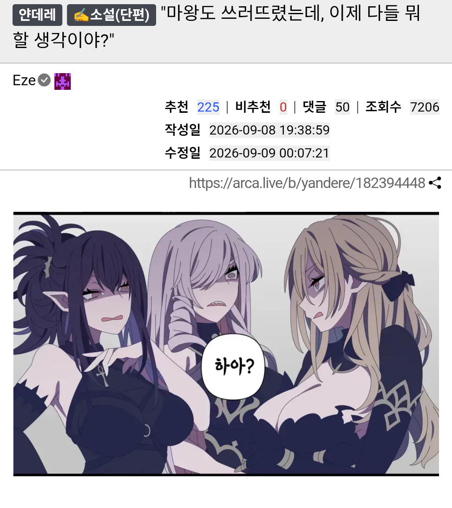

마왕의 거대한 육신이 잿빛 가루가 되어 흩어지는 것을 끝으로, 기나긴 모험은 막을 내렸다.
우여곡절 끝에 어떻게든 모두 무사히 마왕성에서 탈출하는 데에도 성공했다.
하루가 꼬박 지난 후에 근방에서 야영을 하면서 가지는 담소의 시간, 말하자면 뒷풀이 시간이 찾아왔다.
마치 여행의 초반을 생각하게 하는 듯한 편한 분위기. 그러나 그때의 들뜬 마음, 기대, 그리고 걱정과는 반대로 나른함과 안도, 그리고 후련함이 가득한 자리였다.
끝날 것 같지 않던 목표를 이룬 와중이니, 피로보다도 기쁨이 더 컸던 것이다.
그래서 나는 그녀들에게 으레 할만한 질문을 던졌던 것이다.
"오호호호호~ 나는 마왕을 토벌한 공적으로 제위에 오를 예정이랍니다. 물론 누군가 나를 억지로 임신시키기라도 한다면 나는 그 사람에게 제위를 넘길 수 밖에 없겠지만 말이에요."
"숲에 돌아가서 동족들에게 마왕을 토벌했다는 소식을 알리고 세계수 아래에서 깊은 명상에 들어갈 것이다. 물론 누군가 나를 억지로 속박 후 감금한다면 어쩔 수 없이 그가 죽을 때까지 잡혀살아야 하겠지."
"교국에 돌아가 성기사로서 여신께서 내게 맡기신 성스러운 소명을 수행할 생각이오. 물론 누군가 억지로 나의 순결의 맹세를 깨뜨리기라도 한다면, 영영 돌아가지 못하고 그의 아내로 살아야만 하겠네만."
말을 마친 세 명은 나를 사이에 두고 각자를 노려보았다.
"""하아?"""
세 명의 사이에서 적대적인 기류가 돌기 시작했다. 그러나, 섣불리 무언가 행동하기보다는 그저 노려보는 것으로 일단은 대치하고는 있다.
누군가는 여행 동안에 쌓인 동료애 때문이라고 말할 수도 있겠지만, 사실 서로가 서로의 상성상 천적이었기도 했기 때문이다.
마왕의 방어막을 무력화시킬 정도로 마법의 위력 하나는 절륜하지만 빠른 영창이 불가능한 샬롯
영창이 필요없는 정령술과 급습으로 빠르게 공격 찬스를 노릴 수 있지만 다소 제압력이 부족한 에우레디케
회복과 방어를 동시에 전개하며 강력한 인내심으로 파티의 선봉을 맡았지만 회피에는 자질이 없는 레지나.
누구 하나가 쓰러지기라도 하는 순간, 승부가 정해진다.
서로 충돌도 잦았던 파티. 어쩌면 그것이 파티가 붕괴되지 않은 두 이유중 하나일 것이다.
그리고 나머지 한 이유는 나이고.
연정이라거나, 친화력, 중재하는 능력 따위를 말하는 것이 아니다.
간단하다, 상성으로 나는 그녀들 모두에 우위였으니까.
최고점은 그녀들에 미치지 못할지라도 그녀들에 준하는 재능을 모두 갖춰, 그녀들이 지닌 약점이 없던 용사였던 나.
세명이 한번에 덤비지 않는 이상, 아니 한번에 덤벼도 나는 그녀들을 제압할 수 있을지 모른다.
'그랬을 때가 있었지....'
마왕을 소멸시키는 데에는 대가가 필요했다.
그리고 나는 내가 가지고 있는 것 중에서 가장 비싼 대가를 지불했다.
그렇게 그 축복은, 교환되었다. 세상의 평화와 맞바꿔.
"용사, 당신은 어떡할 거에요?"
"용사 너는 어쩔 거지?"
"용사님, 용사님 본인의 의견이 제일 중요하지 않겠소."
나는 씁쓸하게 미소를 지었다. 이제 본심을 숨길 생각도 없이 돌진해오는 그녀들 때문만은 아니다.
그녀들의 마음을 모르는 것은 아니다. 그러나 그녀들의 바람은 들어줄 수 없는 것이었다.
이전처럼 강하지 못한 나. 그녀들이 반했던 것은 그런 강함 때문이겠지.
그래. 사실대로 말하자.
이런 힘을 잃어버린, 나약한 용사따위... 너희들에게 짐밖에 되지 않는다고.
너희들에게는 더 나은 상대가 있을 테니까, 그런 상대를 찾으라고.
"나는 고향에 돌아가서 농사를 지을 생각이야."
서로에게 집중하던 그녀들은 그 말 한마디에 다시 굳어버렸다.
"네? 잠깐만요."
"용사여, 그게 무슨...."
"농사라니요, 그보다 더 걸맞은 대우가..."
나는 고개를 저었다.
"나는 예전과 같이 강하지 못해."
그 사실을 증명하기라도 하듯이, 나는 검을 뽑아들었다.
몸에 흐르는 여신의 축복으로 인해 성검을 들자마자 오라가 차오르던 과거의 모습을 나와 그녀들은 기억한다.
그러나 이제는 빛을 잃은 평범한 날붙이에 지나지 않았다.
주인이 평범한 필부로 돌아간 것처럼, 축복없이는 성검도 그런 취급인 것이다.
들 힘만 있다면 아무라도 다룰 수 있는, 그런 처지.
반면 이제는 그저 손가락 만으로 나를 짓눌러버릴 수도 있는 그녀들은 내가 한 말의 의미를 곱씹어보듯이 굳어있었다.
나는 흔들리는 세 쌍의 눈동자를 마주하며, 애써 담담한 목소리로 입을 열었다.
"우리는 세상을 구하기 위해 떠났고, 끝내 구해냈지. 하지만 그것에는 대가가 필요했어."
목이 메어왔지만 애써 가벼운 미소를 지어 보였다. 영문 모를 낯선 감정에 휩싸인 채 굳어버린 그녀들을 향해, 나는 천천히 걸음을 옮겼다.
"결국 너희들의 도움을 받고서도, 마왕의 핵을 부수기 위해서는 더욱 강력하고 신성한 힘이 필요했으니까."
마지막 순간, 마왕의 흉격을 온몸으로 받아내며 억지로 끌어올렸던 초월적인 힘. 그것은 한낱 인간의 그릇으로 온전히 끌어낼 수 있는 것이 아니었다.
"그런 힘을 한번에 터트리기 위해서는... 나 역시도 대가를 치러야만 했으니까."
내 목소리에 미세한 떨림이 묻어났다. 그녀들의 눈동자에 서서히 짙은 충격과 흔들림이 번지는 것이 보였다. 그래, 그저 동정심이어도 좋다. 이것으로 겉잡을 수 없이 벌어져버린 너희와 나의 격차를 인정하고 각자의 길을 갈 수만 있다면.
"괜찮아, 내가 원래 가지고 있던 힘도 아니고, 원래 돌아가야만 하는 대로 돌아간 것 뿐이니까."
애써 차오르는 슬픔을 억누르며, 나는 그녀들을 차례차례 한번씩 품에 꼭 끌어안아주었다.
전장에서는 늘 등을 맞대고 싸웠지만, 이렇게 온전히 품을 내어주고 온기를 나누는 것은 처음이자 마지막이 될 터였다.
그동안 동고동락하며 쌓아온 끈끈한 동료애와, 가슴 한구석에 남몰래 품어왔던 좋아했던 사람들에 대한 쓸쓸한 미련을 가득 담아서.
"샬롯, 훌륭한 여제가 되어줘."
가장 먼저 샬롯의 등을 다독였다. 언제나 오만하고 당당하던 그녀의 어깨가 내 품 안에서 흠칫 떨리는 것이 느껴졌다.
"에우레디케, 고요한 삶을 되찾은 걸 축하해."
다음으로 에우레디케의 어깨를 감싸 안았다. 언제나 차분하던 엘프의 호흡이 찰나의 순간 귓가에서 불규칙하게 엉켰다.
"레지나, 여신님의 뜻을 실천하는 성기사로 살아갈 거지?"
마지막으로 레지나를 끌어안자, 언제나 굳건하던 성기사의 심장 고동이 차가운 갑옷 너머로 미친 듯이 요동치며 전해져 왔다.
한번씩 꼭 끌어안은 그녀들은 얼굴이 새빨갛게 상기되어 있었다.
이런 내 돌발 행동은 예상하지 못했다는 듯이.
"이런 내 뜻을 존중해줄 수 있겠지?"
이걸로 됐다.
이제 나에게 끌렸던 점을 잃어버린 그녀들은 어쩔 수 없이 나를 보내주겠다고 말할테고, 글렇게 하면 서로가 서로를 해치는 상황은 이제 피할 수 있겠지.
"그러니까, 지금 당신이 지금 한 말은..."
"우리가 그렇게 달려들어도 결국 밀어냈던 네가..."
"이젠 무의미한 저항조차도 불가능하다는 뜻 아니오, 귀공?"
그러나 무언가가 이상했다. 서로가 서로에게 적대적인 기류는 가시지 않았지만...
이건 마치 마왕을 토벌하겠다는 대의 아래 뭉친 파티때의 모습을 보는 것처럼, 적대적인 공생관계에 가까웠다.
"자, 잠깐만.... 이러지 말아줘, 다들. 우린 동료잖아?"
그러나 그 다음 말은 절대 하면 안되는 것이었는데.
"나는 너희들을 소중한 동료 이상으로 본 적이 없다고!!!"


니케 도로롱콘")

")
")
마왕도 쓰러트렸고 슬슬 돌아갈까?